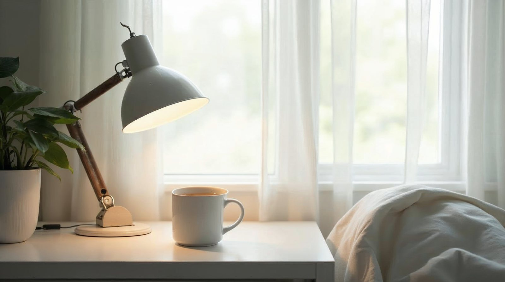
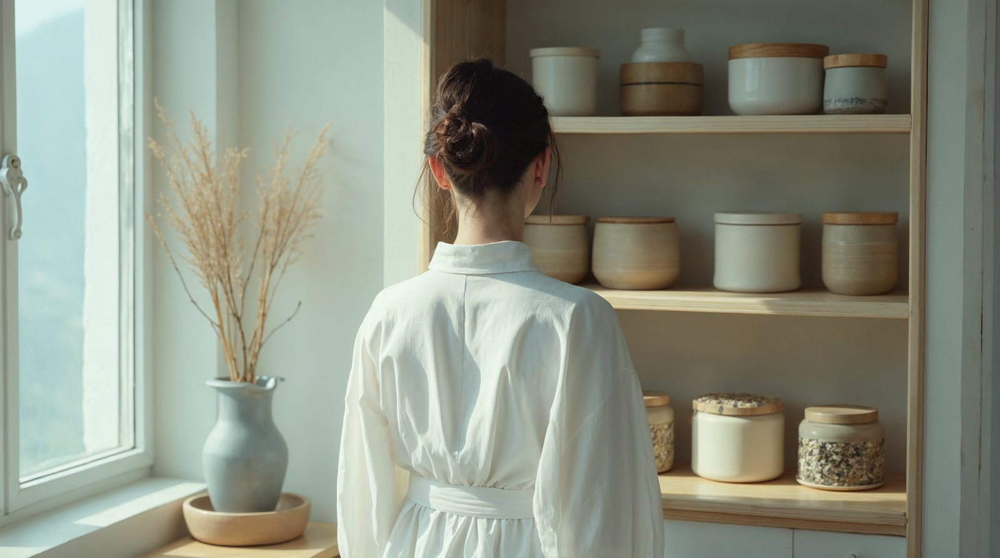
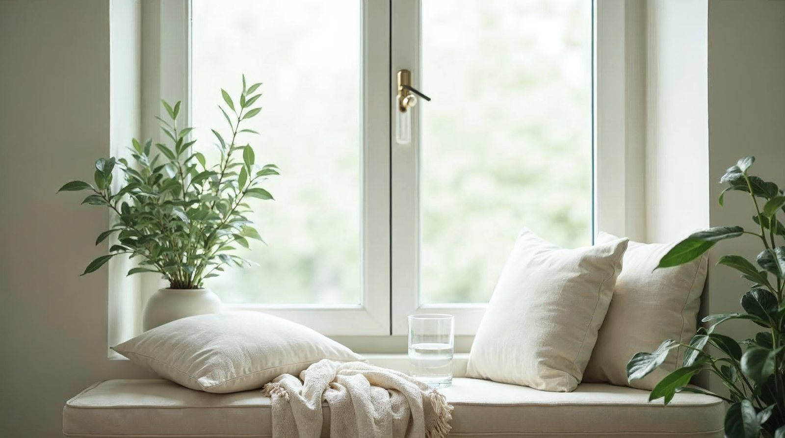
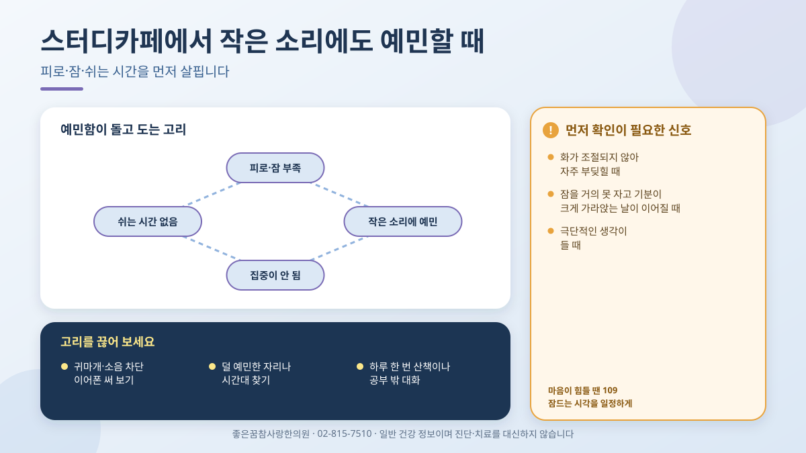

이종호 한의사 감수좋은꿈참사랑한의원 대표원장 (한의사 면허번호 19769)발행 2026-11-24 · 수정 2026-11-27
이 글의 차례
- 왜 이런 불편이 생길 수 있나요
- 왜 지치면 소리가 더 크게 들릴까요?
- 예민함은 어떤 모습으로 나타나나요?
- 지친 예민함과 도움이 필요한 경우는 어떻게 다른가요?
- 상황별 예시
- 스스로 점검해 보세요
- 먼저 이렇게 여쭙니다
- 일상에서 먼저 해 볼 수 있는 것
- 스터디카페 자리는 이렇게 골라 보세요
- 소리가 거슬릴 때 바로 해 볼 수 있는 것
- 귀마개와 이어폰은 어떻게 고를까요?
- 예민함이 몸으로 번질 때는?
- 쉬는 시간은 어떻게 보내면 좋을까요?
- 잠이 얕아졌다면 이렇게 바꿔 보세요
- 카페인은 어떻게 조절할까요?
- 몇 주에 걸쳐 이렇게 바꿔 갑니다
- 한의원에서 함께 살필 수 있는 경우
- 첫 진료는 이렇게 진행됩니다
- 이렇게 기록해 오시면 상담이 쉬워집니다
- 마치며
- 이런 증상은 먼저 확인이 필요합니다
- 함께 읽으면 좋은 글
소리를 줄이는 도구와 덜 붐비는 시간대를 찾고, 하루 한 번은 공부와 상관없는 쉬는 시간을 두는 것이 예민함을 다루는 첫걸음입니다. 예전에는 신경 쓰이지 않던 펜 소리와 의자 끄는 소리가 어느 날부터 크게 들리고 짜증이 난다는 수험생이 있습니다.
이런 이야기를 하시면서 스스로 너무 예민한 사람이 된 것 같다며 미안해하는 분이 많습니다. 저는 그럴 때 성격이 변했다기보다 몸과 마음이 많이 지쳐 있다는 신호일 가능성이 크다고 말씀드립니다. 예민함을 탓하기보다, 무엇이 나를 이렇게 지치게 했는지 함께 살펴보는 것이 먼저입니다.
왜 이런 불편이 생길 수 있나요
- 오랜 수험 생활로 지치고 잠이 부족하면 작은 자극에도 신경이 곤두서기 쉽습니다.
- 시험이 다가올수록 긴장이 높아져 주변 소리가 공부를 방해한다는 느낌이 커지기도 합니다.
- 쉬는 시간 없이 하루를 보내면 쌓인 피로를 풀 틈이 없어 예민함이 이어질 수 있습니다.
- 예민해지면 두통이나 어깨 긴장처럼 몸의 불편이 함께 오는 분이 있습니다.
- 카페인을 많이 마시면 두근거림과 함께 소리에 더 민감해진다는 분도 있습니다.
왜 지치면 소리가 더 크게 들릴까요?
우리 뇌는 평소 필요 없는 소리를 걸러 내며 집중할 것에만 주의를 둡니다. 그런데 잠이 부족하고 긴장이 오래가면 이 거르는 힘이 약해져, 평소라면 흘려들었을 소리까지 하나하나 귀에 걸리게 됩니다.
한 번 거슬린 소리는 "또 들리면 어떡하지" 하는 마음 때문에 더 기다리게 되고, 기다리니 더 잘 들립니다. 그렇게 짜증이 쌓이면 어깨와 턱에 힘이 들어가고 머리가 무거워져, 다시 소리에 예민해지는 고리가 생깁니다.
한의학에서는 오래 애쓰고 잠이 모자라면 심장의 기운과 혈이 부족해져 마음이 쉽게 흔들리고 잘 놀란다고 봅니다. 또 긴장과 답답함이 쌓이면 간의 기운이 뭉쳐 짜증과 두통으로 드러난다고 봅니다.
예민함은 어떤 모습으로 나타나나요?
같은 소리 예민함이라도 사람마다 함께 오는 모습이 다릅니다. 펜 딸깍거리는 소리, 키보드, 기침, 다리 떠는 소리처럼 특정 소리가 유독 거슬리는 분이 있고, 소리가 나면 심장이 쿵 하고 놀라 두근거리는 분도 있습니다.
짜증이 확 올라와 한동안 공부로 돌아가기 어렵거나, 소리와 함께 머리가 지끈거리고 어깨가 굳기도 합니다. 밤에도 작은 소리에 자주 깬다면 예민함이 잠까지 번진 것일 수 있습니다. 나에게 어떤 모습이 함께 있는지 살펴보세요.
지친 예민함과 도움이 필요한 경우는 어떻게 다른가요?
대부분의 예민함은 쉬고 잠을 챙기면 조금씩 누그러집니다. 다만 소리 때문에 공부 장소를 계속 옮겨 다니며 한 곳에 앉아 있기 어렵거나, 예민함이 공부 밖의 일상과 사람 사이로까지 번져 있다면 혼자 버티기보다 도움을 받는 편이 좋습니다.
이럴 때는 상담 기관의 도움을 함께 받으시길 권합니다. 도움을 받는 것도 시험 준비를 끝까지 이어 가기 위한 방법입니다.
상황별 예시
- 예를 들어 옆자리 사람이 볼펜을 계속 딸깍거려 두 시간째 같은 페이지만 보고 있는 경우, 참고 버티기보다 귀마개를 끼거나 자리를 옮기는 것이 그날의 공부를 지키는 방법입니다.
- 예를 들어 오후 늦게 사람이 몰리는 시간마다 짜증이 커지는 경우, 그 시간을 산책이나 식사 시간으로 바꾸고 붐비지 않는 아침과 밤에 공부를 몰아 보세요.
- 예를 들어 하루 열 시간 넘게 쉬는 날 없이 몇 달째 공부하고 있는 경우, 소리보다 쉼이 부족한 쪽이 더 클 수 있습니다. 일주일에 반나절이라도 공부와 상관없는 시간을 정해 두는 것부터 시작해 보세요.
스스로 점검해 보세요
- 예전보다 작은 소리가 더 크게 들린다
- 소리가 나면 짜증이 올라와 한동안 집중이 안 된다
- 하루 잠이 여섯 시간보다 짧은 날이 많다
- 일주일에 하루도 쉬는 날이 없다
- 커피나 에너지 음료를 하루 세 잔 넘게 마신다
- 예민할 때 두통이나 어깨 긴장이 함께 온다
해당되는 항목이 많을수록 소리보다 피로와 긴장이 바탕에 깔려 있을 가능성이 큽니다. 이럴 때 공부 장소만 계속 바꾸면 잠깐 편하다가 다시 같은 일이 반복되기 쉬워, 잠과 쉼을 함께 손보는 것이 좋습니다. 몇 주째 같은 흐름이라면 진료 때 이 목록을 함께 보며 이야기를 나누면 좋습니다.

먼저 이렇게 여쭙니다
- 예민함이 언제부터 심해졌나요?
- 하루에 쉬는 시간을 따로 두고 있나요?
- 잠은 충분히 주무시나요?
- 예민해지면 두근거림이나 두통이 함께 오나요?
- 커피나 에너지 음료는 하루에 얼마나 드시나요?
- 최근 시험 일정이나 성적 때문에 마음이 무거운 일이 있었나요?
소리에 대한 이야기로 오셨는데 잠과 카페인, 시험 일정까지 여쭙는 것은 예민함의 바탕을 함께 찾기 위해서입니다. 소리는 계기일 뿐, 그 소리를 견디기 어렵게 만든 피로와 긴장을 함께 봐야 실마리가 잡힙니다.
일상에서 먼저 해 볼 수 있는 것
- 귀마개나 소음 차단 이어폰 써 보기
- 소리에 덜 민감한 자리나 시간대 찾기
- 하루 한 번은 공부와 상관없는 산책이나 대화 시간 갖기
- 잠드는 시각을 일정하게 지키기
- 오후 세 시 이후에는 카페인 줄이기
- 짜증이 올라오면 자리에서 일어나 물 한 잔 마시고 오기
- 하루 공부 목표를 조금 낮춰 마음의 여유 두기
스터디카페 자리는 이렇게 골라 보세요
같은 스터디카페라도 자리에 따라 들리는 소리가 꽤 다릅니다. 몇 가지 기준을 정해 두면 자리 고르는 데 덜 지칩니다.
- 출입문, 정수기, 화장실 가는 통로에서 먼 자리
- 노트북 사용 구역과 떨어진 조용한 구역
- 벽을 등지거나 구석에 있어 등 뒤로 사람이 덜 지나가는 자리
- 냉난방기 소음이 덜한 자리
- 조명이 너무 밝거나 깜빡이지 않는 자리
매일 다른 자리를 고르는 곳이라면 입장 시간을 조금 당겨 원하는 자리를 먼저 잡는 것도 방법입니다. 소리가 덜한 자리를 찾았다면 그 자리 번호를 기억해 두세요.
자리를 옮기는 것은 예민해서가 아니라 공부 환경을 맞추는 일입니다. 미안해하지 않으셔도 됩니다.
소리가 거슬릴 때 바로 해 볼 수 있는 것
거슬리는 소리가 들리는 순간 짜증이 확 올라오면 그 자리에서 할 수 있는 작은 방법이 도움이 됩니다.
- 숨을 4초 들이쉬고 6초 내쉬기를 세 번 하기(어지러우면 바로 멈추기)
- 소리 대신 내 숨소리나 발바닥 감각에 잠깐 주의를 옮기기
- 어깨와 턱에 들어간 힘을 의식해서 풀기
- 5분 정도 자리를 떠나 바깥 공기 쐬고 오기
소리를 완전히 없앨 수는 없지만, 소리에 반응하는 내 몸을 조금 늦추는 연습은 할 수 있습니다.
짜증이 올라온 자신을 탓하지 않는 것도 중요합니다. "지금 많이 지쳤구나" 하고 한 번 알아차려 주는 것만으로도 감정이 조금 가라앉을 수 있습니다. 소리를 낸 사람에게 직접 말하기 어렵다면 스터디카페 관리자에게 조용히 부탁하는 방법도 있습니다.
귀마개와 이어폰은 어떻게 고를까요?
소리를 줄이는 도구는 예민함을 다루는 가장 손쉬운 방법입니다. 다만 귀에 맞지 않으면 오히려 답답하고 아파서 오래 쓰기 어려우니, 몇 가지를 살펴 고르세요.
- 폼 귀마개는 돌돌 말아 넣고 부풀 때까지 잠깐 눌러 주면 소리가 더 잘 막힙니다.
- 실리콘 귀마개는 귀 입구를 덮는 방식이라 귀 안이 예민한 분께 편할 수 있습니다.
- 소음 차단 이어폰은 낮게 웅웅거리는 소리를 줄이는 데 도움이 되지만 오래 끼면 귀가 답답할 수 있습니다.
- 귀마개는 손을 씻고 끼우고, 더러워지면 새것으로 바꾸기
귀가 가렵거나 아프고 진물이 난다면 사용을 멈추고 귀 상태를 먼저 확인받아 주세요.
예민함이 몸으로 번질 때는?
예민한 날이 이어지면 머리가 지끈거리고, 어깨와 목이 돌처럼 굳고, 턱이 뻐근하다는 분이 많습니다. 짜증을 참느라 저도 모르게 이를 꽉 물고 어깨를 움츠리고 있기 때문입니다.
공부하다 한 시간에 한 번은 어깨가 올라가 있지 않은지, 이를 물고 있지 않은지 확인해 보세요. 어깨를 크게 돌리고 입을 살짝 벌려 턱의 힘을 빼 보세요. 머리가 조금 가벼워질 수 있습니다.
쉬는 시간은 어떻게 보내면 좋을까요?
예민함이 커진 분들의 하루를 들어 보면 쉬는 시간에도 휴대폰으로 강의나 기출 해설을 보고 있는 경우가 많습니다. 몸은 쉬는 시간을 보내도 머리는 계속 일하고 있는 셈입니다.
50분 공부 뒤 10분은 휴대폰을 내려놓고 일어나 걸어 보세요. 점심 뒤 15분쯤 학원 밖을 한 바퀴 도는 것도 좋습니다.
쉬는 시간을 아까워하는 마음은 충분히 이해합니다. 그래도 제대로 쉰 다음 시간이 오히려 더 또렷할 수 있습니다.
잠이 얕아졌다면 이렇게 바꿔 보세요
소리 예민함이 커진 분들은 밤에도 작은 소리에 자주 깬다는 경우가 많습니다. 잠이 얕으면 다음 날 더 예민해지니, 밤의 환경을 먼저 손보는 것이 좋습니다.
- 잠드는 시각과 일어나는 시각을 주말에도 크게 바꾸지 않기
- 고시원이나 원룸이라면 잘 때도 귀마개를 쓰거나 작은 백색소음 틀어 두기
- 잠들기 한 시간 전에는 휴대폰과 문제집 내려놓기
- 저녁 이후 커피, 에너지 음료, 술 피하기
- 방을 어둡고 조금 서늘하게 유지하기
밤에 깨서 다시 잠들기 어렵다면 시계를 보지 말고 천천히 내쉬는 호흡을 해 보세요. 몇 시인지 확인하는 순간 걱정이 커져 잠이 더 멀어지기 쉽습니다.
카페인은 어떻게 조절할까요?
예민함이 커진 수험생의 책상에는 커피나 에너지 음료가 놓여 있는 경우가 많습니다. 카페인은 졸음을 쫓아 주지만, 많이 마시면 두근거림과 함께 신경을 곤두서게 해 작은 소리에도 더 놀라기 쉽습니다.
- 하루 카페인 음료를 한두 잔으로 정하기
- 오후 세 시 이후에는 보리차나 카페인 없는 차로 바꾸기
- 에너지 음료와 커피를 같은 날 겹쳐 마시지 않기
- 갑자기 끊으면 두통이나 졸음이 심해질 수 있어 일주일에 한 잔씩 줄여 가기
몇 주에 걸쳐 이렇게 바꿔 갑니다
한꺼번에 모든 것을 바꾸려 하면 그 자체가 또 하나의 부담이 됩니다. 한 주에 하나씩 더해 보세요.
- 첫 주: 귀마개나 이어폰을 챙기고, 덜 붐비는 자리와 시간대 찾기
- 둘째 주: 쉬는 시간에 휴대폰 대신 일어나 걷기
- 셋째 주: 오후 카페인 줄이고 잠드는 시각 고정하기
- 넷째 주: 일주일에 반나절, 공부와 상관없는 시간 정하기
저는 큰 목표보다 해낼 수 있는 만큼을 함께 정하는 편입니다. 어느 주에 잘 안 됐더라도 스스로를 탓하지 말고, 그 주를 한 번 더 이어 가면 됩니다.

한의원에서 함께 살필 수 있는 경우
- 예민함과 함께 잠이 얕아진 경우 잠과 마음의 긴장을 함께 살핍니다.
- 예민해지면 두통이나 어깨 긴장이 심해지는 경우 몸의 긴장을 함께 살핍니다.
- 오래 지친 느낌이 드는 경우 생활 리듬과 쉬는 방법을 함께 정리합니다.
좋은꿈참사랑한의원에서는 모든 분께 맥을 짚으며 마음의 부담이 몸에 어떻게 나타나는지 천천히 여쭙고, 필요하다고 판단될 때 설진을 더해 살핍니다. 침이나 한약 상담 가운데 지금 상태에 맞는 방법을 정하고, 상담 기관의 도움이 필요하면 함께 안내합니다. 이야기하신 내용은 본인 동의 없이 다른 사람에게 알리지 않습니다.
한약을 상담할 때는 지금 드시는 약을 먼저 확인합니다. 처방받아 드시는 약이 있다면 그대로 이어 가시고, 조절이 필요하면 처방한 의사와 상의해 주세요.
첫 진료는 이렇게 진행됩니다
처음 오시면 접수 뒤 다른 모든 분과 마찬가지로 맥부터 짚습니다. 손목을 짚는 동안 예민함이 시작된 시기, 하루 공부와 쉬는 시간, 잠과 식사, 함께 오는 몸의 불편을 천천히 여쭙고, 필요하다고 판단되면 혀의 상태와 목·어깨의 긴장도 함께 확인합니다.
진료실에서는 둘이 아니라 셋이 이야기한다고 저는 생각합니다. 환자분, 환자분의 맥, 그리고 저입니다. 그러니 이야기를 꺼내기 어렵다면 말씀하실 수 있는 만큼만 하셔도 괜찮습니다.
그날 할 치료와 생활에서 바꿀 한 가지를 함께 정하고, 다시 오시면 그사이 잠과 예민함이 어땠는지부터 이어서 여쭙습니다.

이렇게 기록해 오시면 상담이 쉬워집니다
- 예민해지기 시작한 시기와 특히 거슬리는 소리
- 하루 공부 시간과 쉬는 시간, 잠든 시각
- 예민할 때 함께 오는 두근거림, 두통, 어깨 긴장
- 기분이 가라앉는 날이 얼마나 이어졌는지
하루를 마칠 때 "예민함 0~10 중 7, 잠 5시간, 커피 3잔, 쉬는 시간 거의 없음"처럼 한 줄로 적어 보세요. 일주일만 모아도 예민함이 높은 날과 낮은 날의 차이가 보이고, 무엇을 먼저 바꿀지 정하기 쉬워집니다.
마치며
작은 소리 하나에 하루가 흔들리는 날이 이어지면, 공부보다 나 자신이 더 미워지기도 합니다. 그래도 그 예민함은 그동안 얼마나 오래 애써 왔는지 보여 주는 표시일 때가 많습니다. 오늘은 귀마개 하나, 쉬는 시간 10분부터 챙겨 보세요.
다음에 오시면 어떤 소리가 가장 거슬렸는지, 그 주에 잠은 몇 시간쯤 주무셨는지부터 여쭙겠습니다.
이런 증상은 먼저 확인이 필요합니다
- 화가 조절되지 않거나, 잠을 거의 못 자거나, 기분이 크게 가라앉는 날이 이어지는 경우
- 스스로를 해칠 생각이 들면 ☎ 109로 바로 연락하세요.
이런 신호가 있으면 한의원보다 가까운 병원이나 응급실을 먼저 찾으세요.
함께 읽으면 좋은 글
- 집중이 안 될 때 짧은 집중 구간과 백색소음은 어떻게 활용하나요?
- 작은 소리에도 자주 깨는 분은 어떤 점을 살펴보나요?
- 고시원이나 원룸처럼 좁은 방에서 소음과 빛 때문에 잠이 얕을 때는?

여쭙는 것
- 예민함이 언제부터 심해졌나요?
- 하루에 쉬는 시간을 따로 두고 있나요?
- 잠은 충분히 주무시나요?
생활에서 해 볼 것
- 귀마개나 소음 차단 이어폰 써 보기
- 소리에 덜 민감한 자리나 시간대 찾기
- 하루 한 번은 공부와 상관없는 산책이나 대화 시간 갖기
한의원에서 함께 살필 것
- 예민함과 함께 잠이 얕아진 경우 잠과 마음의 긴장을 함께 살핍니다.
- 예민해지면 두통이나 어깨 긴장이 심해지는 경우 몸의 긴장을 함께 살핍니다.
- 오래 지친 느낌이 드는 경우 생활 리듬과 쉬는 방법을 함께 정리합니다.
먼저 확인이 필요한 신호
- 화가 조절되지 않거나, 잠을 거의 못 자거나, 기분이 크게 가라앉는 날이 이어지는 경우
- 스스로를 해칠 생각이 들면 109로 바로 연락하세요.
한눈에 보는 표
| 구분 | 핵심 |
|---|---|
| 여쭙는 것 | 예민함이 언제부터 심해졌나요? 하루에 쉬는 시간을 따로 두고 있나요? |
| 생활에서 해 볼 것 | 귀마개나 소음 차단 이어폰 써 보기 소리에 덜 민감한 자리나 시간대 찾기 |
| 한의원에서 함께 살필 것 | 예민함과 함께 잠이 얕아진 경우 잠과 마음의 긴장을 함께 살핍니다. 예민해지면 두통이나 어깨 긴장이 심해지는 경우 몸의 긴장을 함께 살핍니다. |
| 먼저 확인이 필요한 신호 | 화가 조절되지 않거나, 잠을 거의 못 자거나, 기분이 크게 가라앉는 날이 이어지는 경우 스스로를 해칠 생각이 들면 109로 바로 연락하세요. |
자주 묻는 질문
예민해진 게 성격이 변한 건가요?
많이 지치면 누구나 예민해질 수 있어, 성격보다 지금의 피로와 긴장을 먼저 살펴보는 것이 좋습니다.
공부 장소를 바꾸는 게 좋을까요?
환경을 바꾸는 것만으로 편해지기도 해서, 시간대나 자리를 바꿔 보는 것부터 권합니다. 어디로 옮겨도 같은 일이 되풀이된다면 잠과 쉼도 함께 살펴보세요.
소음 차단 이어폰을 하루 종일 껴도 괜찮을까요?
오래 끼면 귀가 답답하거나 아플 수 있어 쉬는 시간에는 빼서 귀를 쉬게 해 주세요. 소리를 너무 크게 틀지 않는 것도 중요합니다.
진료 시간은 어떻게 되나요?
좋은꿈참사랑한의원은 평일 09:30~20:00(점심 13:00~14:00), 토·일·공휴일 09:30~15:00에 진료합니다.
좋은꿈참사랑한의원은 재진 때 지난번 이야기부터 이어서 여쭙니다. 진료시간과 예약은 오시는 길에서 확인하세요.
어디서 상담받을 수 있나요?
좋은꿈참사랑한의원은 서울 동작구 만양로2길 2 신성빌딩 3층·5층(서울 동작구 상도동, 7호선 상도역 3번 출구 근처)에 있습니다. 한의사 3명(이종호 대표원장, 조영기 수석진료원장, 정원영 진료원장)이 진료합니다. 진료시간은 평일 09:30~20:00(점심 13:00~14:00), 토·일·공휴일 09:30~15:00이며, 방문 전 전화로 확인을 권합니다. 예약은 네이버 예약, 카카오톡 상담, 전화 02-815-7510로 받습니다.
이 글은 일반적인 건강 정보이며 개인의 진단이나 치료를 대신하지 않습니다. 증상이 있거나 복용 중인 약이 있다면 진료를 통해 확인하세요. 치료 효과는 개인마다 다를 수 있습니다.
작성 기준: 일반적으로 알려져 있는 건강 정보를 참고해 정리했습니다(대표원장 감수). 증상 기록은 1~2주 동안 하루 1회, 비슷한 시간에 적어 오시면 지난 상태와 비교하기 쉽습니다.